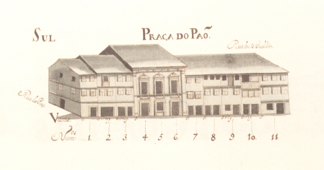

MRB-04-PracaDoPao
Informação da rua
Número da Rua:
4
Nome:
Praça do Pão
Descrição da Rua:
Informações das casas
- Enfiteuta: Maria Barbosa, viúva de Manuel Fernandes, alfaiate do Campo de S. Sebastião
- Foro: 370 reis e 2 galinhas
- Descrição:
Confronta, de nascente, com a Rua do Poço . - Enfiteuta: José Gomes Ferraz
- Foro: 480 reis e 2 galinhas
- Enfiteuta: Félix Francisco
- Foro: 480 reis e 2 galinhas
- Enfiteuta: D. Paula Francisca de Melo, viúva de Francisco da Rocha Tinoco
- Foro: 620 reis e 2 galinhas
- Descrição:
As casas nº 5 e 6, passaram a constituir um único prazo, em 1702. Em 1789, o nº 4 foi também integrado no mesmo prazo. - Enfiteuta: D. Paula Francisca de Melo, viúva de Francisco da Rocha Tinoco
- Foro: 825 reis e 2 galinhas
- Descrição:
As casas nº 5 e 6, passaram a constituir um único prazo, em 1702. Em 1789, o nº 4 foi também integrado no mesmo prazo. - Enfiteuta: Padre Ambrósio Lourenço
- Foro: 520 reis e 2 galinhas
- Enfiteuta: Dr. José de Araújo
- Foro: 730 reis e 2 galinhas
- Descrição:
O enfiteuta sucedeu a seu pai, Francisco de Araújo , o qual era filho deJosé de Araújo , barbeiro, e de sua mulherAna Maria . - Enfiteuta: Dr. José de Araújo
- Foro: 520 reis e 2 galinhas
- Descrição:
O enfiteuta sucedeu a seu pai, Francisco de Araújo , o qual era filho deJosé de Araújo , barbeiro, e de sua mulherAna Maria . - Enfiteuta: Manuel da Costa Vasconcelos
- Foro: 570 reis e 2 capões
- Enfiteuta: D. Teresa Maria Ferreira Santarém
- Foro: 150 reis
- Descrição:
Esta casa possui frontaria para a Rua de D. Gualdim . Igual pensão é paga aoHospital de S. Marcos . - Enfiteuta: João Francisco, tratante
- Foro: 550 reis e 2 galinhas
- Descrição:
A parte do poente é foreira ao Hospital de S. Marcos . - Enfiteuta: Dr. António da Costa
- Foro: 1800 reis, 2 capões e 2 galinhas
- Descrição:
Encontram-se unidas num único prazo desde o ano de 1660. - Enfiteuta: Rev. Francisco da Costa, Abade de Tadim
- Foro: 1010 reis e 4 galinhas
- Descrição:
No ano de 1660 foi incorporado neste prazo uma torre pertencente ao nº 16, e, no ano de 1724, um quintal do nº 2 da Rua dos Açougues Velhos . - Enfiteuta: José Luís. alfaiate
- Foro: 260 reis e 1 capão
Casa 1
Casa 2
Casa 3
Casa 4
Casa 5 e 6
Casa 7
Casa 8
Casa 9
Casa 10
Casa 11
Casa 12
Casa 13 e 14
Casa 15
Casa 16
Imagens

Praça do Pão - vista norte.
Praça do Pão - vista sul.